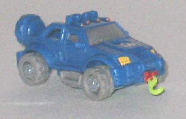
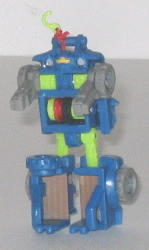
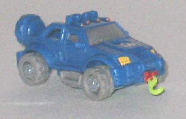
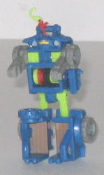
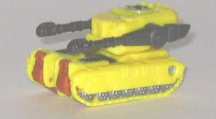
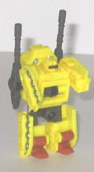

Payload
Payload
 
Allegiance : Decepticon, Minicon
Difficulty of Transformation : Very Easy
Color Scheme : Gray, blue, light leafy green, and some silver, yellow, light grayish brown, red, and dull orange
Individual Rating : 4.4
Payload
vs. Ascentor
Size
: Mini-Con (2-pack)
Overall Rating
: 4.8
 Payload
Payload


Allegiance
: Decepticon, Minicon
Difficulty of Transformation
: Very
Easy
Color Scheme
: Gray, blue, light
leafy green, and some silver, yellow, light grayish brown, red, and dull
orange
Individual Rating
: 4.4
(NOTE: Because this toy is a repaint, this is not a full-blown review. This mainly covers any changes made to the toy and the color scheme, and merely compares it to Armada Ransack. For a review on the mold itself, read the review of Armada Ransack here .)
A blue jeep may not be
all that realistic, but it that doesn't stop Payload's color scheme from
looking fairly cool. The blue is really attractive shade, and the gray
makes a nice accent color, as does the light green, and the latter two
help Payload to share a "color scheme theme" with his teammates,
Kobushi
and
Scattorbrain
. The red-colored
twine used for the hauling rope on the front is also a really nice color
that catches the light well, too. Payload also shares the same general
number of paint apps that the previous versions of this mold did, so no
complaints there-- and the silver and yellow really blend in nicely with
the blue, as well.
No mold changes have
been made to Payload-- however, like his teammates, he has a Decepticon
symbol painted over his molded-in Minicon symbol, which is rather stupid.
 Ascentor
Ascentor


Allegiance
: Autobot, Minicon
Difficulty of Transformation
: Very
Easy
Color Scheme
: Yellow, charcoal black,
and some metallic gunmetal gray, black, and dull rusty orange
Individual Rating
: 5.1
(NOTE: Because this toy is a repaint, this is not a full-blown review. This mainly covers any changes made to the toy and the color scheme, and merely compares it to Armada Dualor. For a review on the mold itself, read the review of Armada Dualor here .)
Ascentor's color scheme
definitely far worse than Payload's. He's almost entirely that horrid shade
of yellow, and he has fewer paint apps than either of the mold's previous
paint jobs to break up all of that icky color. The charcoal black isn't
too bad of a color, and neither is the orange and gunmetal gray, but that
awful yellow just pretty much negates any other cool colors he has. Although
the fact that only his feet are dull orange, and no other part of his body
is that color, is a bit of an odd color choice, methinks.
No mold changes have
been made to Ascentor. He does have a new tampographed Autobot symbol on
the rear end of his turret, however.
Payload vs. Ascentor
is the worst of the Wave 2 Minicon Vs. Packs. Both are pretty mediocre,
uninspired Minicon molds to start out with, and though Payload has a nice
color scheme, Ascentor's is rather gag-worthy. Not recommended unless you're
a Minicon or Cybertron completist.
Review by Beastbot